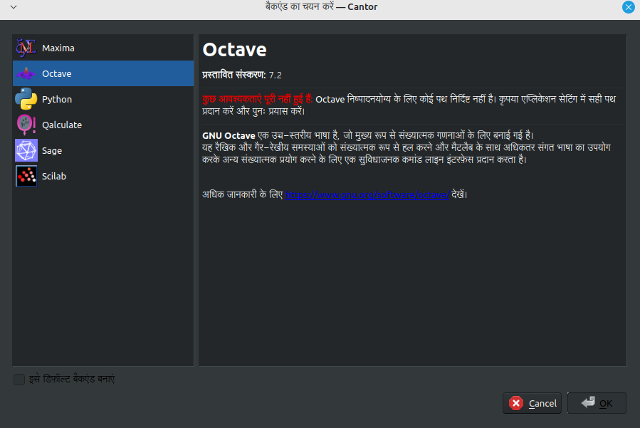
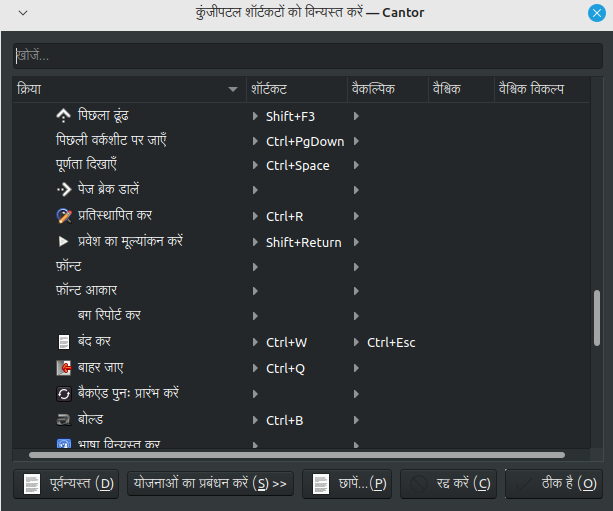
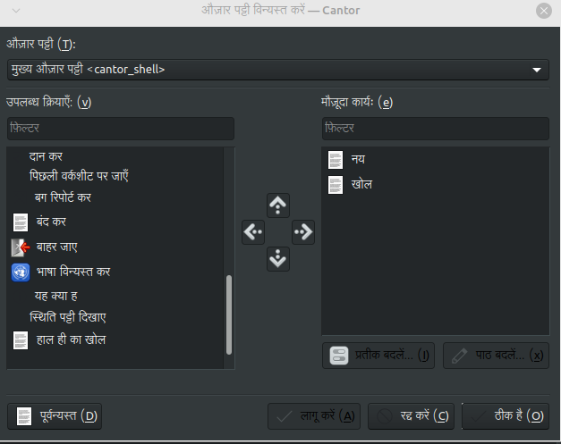
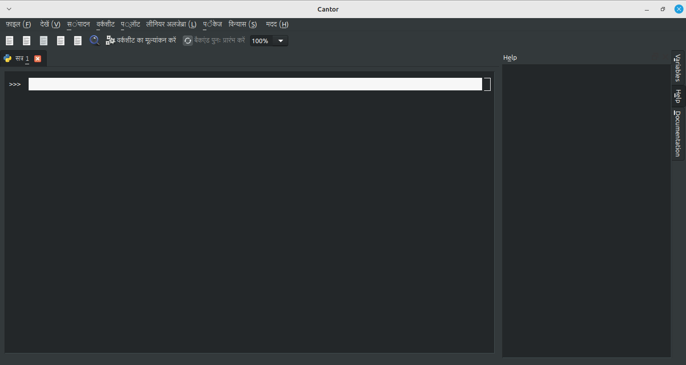

Asish Kumar
Student | 🇮🇳
Hindi Translation of Cantor and KDE connect - Season of KDE 2024
This is the second and last blog for SoK 2024.
During the second half of Season of KDE, I translated Cantor and KDE connect in hindi. Cantor and KDE connect had about 1000 and 500 lines respectively.
In order to translate these softwares, I took reference from google translate and AI models to improve on my translation. Translation memory did a great job in finding duplicates and helped me to avoid translating the same words again.
A good addition in lokalize would be to add another section which automatically translates the sentence using google translate or AI models. This will speed up the translation work and make the translation of apps better since we can take reference from it.
I also build cantor. Here are some of the screenshots of the translated application:




You can find the translation on the following links:
- https://invent.kde.org/asishkumar/translation-kde-in-hindi/-/tree/master/cantor?ref_type=heads
- https://invent.kde.org/asishkumar/translation-kde-in-hindi/-/tree/master/kdeconnect?ref_type=heads
Here are some tools/applications that I found helpful:
- https://models.ai4bharat.org/#/nmt/v2
- https://translate.google.com/
- https://github.com/freedict/fd-dictionaries/tree/master/eng-hin
- https://hickford.github.io/xkb-layout-explorer/
- https://mike-fabian.github.io/ibus-typing-booster/
I would like to thank my mentors, Benson Muite, Raghavendra Kamath and karunakar for providing valuable guidance throughout the Season of KDE mentorship program.